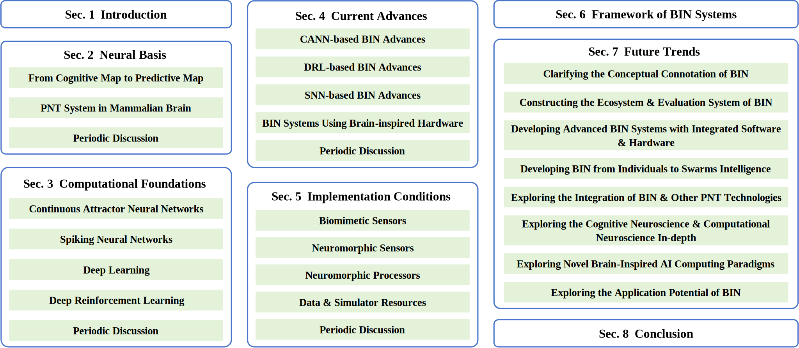

Abstract
Intelligent navigation is essential for unmanned systems. Yet nowadays navigation technologies still fall short of animals’ innate navigation prowess, characterized by continuous, efficient, adaptive, low-power navigating across complex terrains, despite technological advancements. Neuroscience’s half-century exploration has revealed the brain’s innate “Global Positioning System (GPS),” instigating research into Brain-Inspired Navigation (BIN). BIN, is a cutting-edge navigation technology, that bridges disciplines but lacks a cohesive guide for its interdisciplinary study. In this paper, we offer a comprehensive BIN review, mapping its neural basis, computational foundations, current progress, and implementation conditions, providing a general framework for researchers alongside forward-looking recommendations for future development in the domain.
INTRODUCTION
- Traditional navigation technologies, despite decades of progress, still suffer from high power consumption, poor adaptability, and weak generalization, especially in unstructured environments.
- In contrast, animals have innate navigation intelligence that allows them to navigate efficiently and stably in complex environments, particularly in migratory species.
- After years of research, neuroscientists have found that this intelligence comes from the brain’s capabilities of spatial cognition and cognitive map encoding.
- Neuroscientists have deciphered the brain’s “GPS” and revealed the essence of spatial cognition, propelling the emergence of Brain-Inspired Navigation (BIN).
Against this backdrop, we provide a comprehensive review of BIN, an emerging scientific frontier, covering its neural basis, computational foundations, current advances, implementation conditions, system-level framework and forward-looking outlook.
NEUROSCIENTIFIC FOUNDATION
- The Hippocampal-Entorhinal System of Mammals
- The entorhinal cortex and hippocampus are the core navigation-related regions in the mammalian brain. The complex interactions between them form the neural circuits that underpin the brain’s navigation intelligence. (See Appendix A)
Fig. S1. The hippocampal-entorhinal system of mammals. (a) Schematic diagram of the hippocampal-entorhinal system structure. Credit: Medical dictionary: https://medicine.en-academic.com/3923. (b) The neural circuit of the hippocampal-entorhinal system, developed from [6]-[8].
- From Cognitive Map to Predictive Map
- From Tolman’s "cognitive map" hypothesis to the recent "predictive map" theory, decades of scientific research have progressively uncovered the fundamental principles of brain’s spatial cognition, laying the theoretical foundation for BIN.
Fig. 2. From cognitive map to predictive map.
- PNT System in Mammalian Brain
- In the brain, heterogeneous navigation cells, such as Place Cells (PCs), Grid Cells (GCs), and Head Direction Cells (HDCs), each perform their own functions and collaborate together to form the brain’s PNT system, enabling comprehensive perception and encoding of spatial position, time, and speed, etc.
- After capturing endogenous and exogenous cues, the brain can use its Path Integration (PI) capability to build spatial experience, via a complex neural network built by the interaction of different navigation cells.
- Beyond the "big three," i.e., PCs, GCs and HDCs, the brain also houses other functionally diverse navigation-related cells that play important roles in spatial memory and cognitive navigation, offering more potential directions for BIN research. (See Appendix A)
Fig. 3. Interaction logic among heterogeneous navigation cells during PI.
COMPUTATIONAL FOUNDATIONS
- BIN research requires novel modeling approaches to simulate the brain's navigation neural mechanisms (at the neuron/circuity/system-levels) to integrate brain-inspired spatial cognition capabilities into the BIN system.
- Computational foundations are crucial for BIN research, with a focus on Continuous Attractor Neural Networks (CANNs), Deep Reinforcement Learning (DRL), Spiking Neural Networks (SNNs), and Deep Learning (DL) to emulate the properties of clustered neuronal firing.
- There are also single-cell models, including Oscillatory Interference Models (OIMs) and Self-Organizing Models (SOMs), but they are not mainstream methods in current BIN research.
Fig. 4. Illustrations for key computational models.
Table S1. Summary of mentioned computational methods (Appendix B)
| Models | Characteristics | Status Quo | Limitations |
|---|---|---|---|
| CANN | CANN emulates neural populations' firing patterns, encapsulating cerebral encoding, storage, and processing, etc. exhibiting robust neurodynamic properties without training. It accurately simulates diverse navigational cell representations in both 2D and 3D spaces, including multi-scale encodings. |
It has been widely applied in the modeling of PCs, GCs, HDCs, BCs, SCs, TCs, etc. It has a variety of applications in brain-inspired SLAM tasks, like RatSLAM, etc. |
CANN's parameters are manually set to fixed values, lacking plasticity. It is sensitive to disruptive noise and requires precise wiring. |
| SNN | More closely resembling the actual biological neural structure, SNNs have significant capabilities in processing spatiotemporal patterns, along with the advantage of low power consumption, leading to the development of neuromorphic engineering. | It is in the exploratory stage and can be applicable for modeling GCs, PCs, HDCs, BCs, etc. Its evolved neuromorphic computing technology has broad prospects and potential. |
SNNs face the challenges like difficult training and uncertain performance. |
| DL | Trained from an optimization perspective using gradient strategies, it can simulate the firing patterns of GCs, BCs, HDCs, stripe cells, etc. | It has been proven to simulate the pattern of navigation cells from an optimization standpoint based on gradient strategy. | DL models rely on huge labeled training data, lacking neurodynamic properties and biological plausibility. |
| DRL | It merges the strengths of DL's hierarchical information processing and RL's multi-step decision-making. It aligns closely with the goal-oriented navigation strategies observed in animals, guided by the reward mechanism. |
Despite significant theoretical advances, translating these theories into practice, especially in real-world navigation tasks, still poses challenges. | DRL faces the challenges of complex network structure, high training complexity, and the difficulties in designing the reward functions. |
| OIM | The single-cell level navigation model simulates that a neuron's input current is composed of multiple coherent patterns, each with a phase difference of 60°. It can explain the stable and regular firing patterns of GCs and generate GC firing fields with scalable dimensions and adjustable phases by parameter tuning. |
It is primarily used for GC modeling. Recently been proven to be applicable for modeling HDCs, strip cells, and PCs. Most related studies remain experimental, and have not yet been realized in navigation tasks. |
There is debate over the physiological evidence supporting and exists inherent theoretical flaws. |
| SOM | The single-cell level navigation model creates grid firing patterns through single-cell frequency self-organization and competitive learning at the network level. It is capable of simulating the development of GCs in non-Euclidean spaces. Multi-layered SOM can account for the variations in the distribution of GCs across different layers of the MEC. | Primarily used for GC modeling. The competitive learning mechanism can also be applied to PC modeling. Researchers are still exploring variations of SOM to elucidate the generation mechanism of GC firing patterns. |
It is not a universal method for modeling different navigation cells. |
- As a field of interdisciplinary research, should the design of BIN algorithms and systems simulate the brain's spatial cognition and navigational functions from the level of neural behavior or an abstract functional level? This may involve the debate between connectionism and behaviorism, a question that currently lacks a definitive answer and is worth considering.
- Within the same species, there is a distinction between pure navigation cells and conjunctive modulation navigation cells (such as pure GCs and conjunctive GCs). Most navigation cells exhibit significant representation differences in 2D and 3D spaces. Furthermore, the functionality of navigation cells varies across different species. The discovery by neuroscience of the multidimensional characteristic differences of navigation cells is worth discussing in terms of its potential to assist in BIN research.
- In our perspective, the "remapping" of navigation cells, such as PCs' remapping characteristics tied to cognitive map encoding, is a critical spatial cognitive feature. Limited studies, like Tolman-Eichenbaum Machine (TEM) by Burgess's team, have simulated remapping. There is a dearth of innovation in navigation tasks leveraging remapping characteristics of navigation cells in nowadays BIN.
- Despite the fact that some scholars have proposed the theory of memory indexing, the neural mechanisms by which the brain parses environmental semantics to form spatial memory and experience are currently not well understood. This process is crucial for the animal brain to form compressed representations of space and construct the abstract environmental cognitive map. Spatial memory, spatial experience, and spatial awareness may become significant topics in BIN. Thus, the study of their neural basis is extremely important.
- The biological brain's use of navigation cells and neural circuits to achieve dynamic and efficient information filtering is a neural mechanism that is very much worth exploring. It forms the basis for animals to conduct adaptive and efficient navigation. We speculate that this may be one of the key elements of the innate superior navigation abilities of living organisms and could also be one of the significant reasons why unmanned systems with high-precision perception capabilities still fall short of the navigational prowess of biological systems.
- Biological brains constitute a natural and powerful embodied intelligent navigation system, capable of continuously utilizing spatial perception information to output reliable navigation strategies. How the animal brain translates the environmental cognitive map into executable motor control commands is likely an issue that warrants the attention of future BIN research.
CURRENT ADVANCES
- CANN-based BIN Advances
Discussion. Current CANN-based BIN research primarily focuses on replicating the representation patterns of navigation cells, shifting from simulating single-type cells to multi-cell collaborative functions. Some studies simulate richer navigation cells, while others model the multi-scale characteristics of key cells like GCs. Despite different approaches, the common goal is to achieve a more comprehensive replication of the brain's PI capability to integrate internal and external cues. Essentially, the key issue in CANN-based BIN research is how to effectively use spatial experiences from the CANN-modeled PI framework to construct a spatial relationship description consistent with the historical navigation process. When these spatial experiences are constrained into a topological form, they form the dead reckoning or SLAM capability in BIN. Compared with traditional state space models (e.g., Kalman filtering, factor graph optimization, etc.), this method converts the state estimation or optimization problem in multi-source information fusion into the encoding and decoding of spatial experiences.
Table 1. Snapshot summary of BIN's advances (Part 1)
Categories Works Year Index Terms CANN-Based Advances [88] 2004 RatSLAM; Hippocampus; Pose cell; PI [128] 2005 RatSLAM; Experience mapping; Pose cell; PI [129] 2008 RatSLAM; Complex suburban; Dataset [130] 2010 RatSLAM; Persistent navigation and mapping [131] 2010 RatSLAM; Conjunctive GC; PI [132] 2013 OpenRatSLAM; Open source; Datasets and tutorial [133] 2013 BatSLAM; Bionic sonar; Spatial orientation and mapping [136] 2014 RatSLAM variant; Multi-sensor calibration; Closed-loop fusion [134] 2015 BatSLAM; 3D sonar; Egomotion estimation [139] 2015 SLAM; GC; PC; PI; Cognitive map [142] 2015 DophinSLAM; 3D PC; Underwater SLAM [146] 2017 Long-range navigation; GC; PI [154] 2018 Place recognition; Multi-scale homogeneous mapping; Wi-Fi and Barometer PCs [91] 2019 NeuroSLAM; 3D GC; Multi-layered HDC; Multi-layered experience map [147] 2019 Goal-directed navigation; GC; PI [148] 2019 Vector-based Navigation; Obstacle avoidance GC; PC; BC [140] 2020 NeuroBayesSLAM; HDC; GC; Bayesian attractor modeling [137] 2021 RatSLAM variant; Unsupervised learning; Latent state description [149] 2021 Dead Reckoning; Visual-inertial fusion; HDC; PC [144] 2022 NeuroSLAM variant; Bionic polarized sky-light sensor; Absolute heading [151] 2022 Large-scale 3D PI; Multi-scale 3D GCs; Neural cliques encoding [153] 2022023 Positioning; Multimodal fusion; Multi-scale SCs, GCs, HDCs; DTMB [143] 2024 ORB-NeuroSLAM; ORB features; 3D GC; Multi-layered HDC [145] 2024 NeuroSLAM variant; Semantic information; Collaborative SLAM [150] 2024 Multimodal Navigation; HDC; 3D GC; 3D PC; Information fusion [152] 2024 Multi-modal Navigation; Multi-scale PCs and GCs; GNSS-IMU fusion [141] 2025 Hybrid-NeuroSLAM; Visual-inertial fusion; HDC; GC; Bayesian attractor - DRL-based BIN Advances
Discussion. DRL excels in navigation tasks by merging DL's feature extraction with RL's decision-making, enabling end-to-end policy optimization. It learns adaptive, goal-oriented strategies with potential challenges including sample inefficiency and reward absence/sparseness. Despite hurdles, DRL's promise for autonomous navigation is significant, the usage of reward signals to guide exploration and exploitation behaviors is reminiscent of how animals navigate their environment, making DRL a plausible approach for intelligent navigation.
Table 1. Snapshot summary of BIN's advances (Part 2)
Categories Works Year Index Terms DRL-Based Advances [155] 2000 Goal-directed navigation; PC; PI [156] 2000 Dead reckoning; PC; Goal-independent spatial map [89] 2018 Vector-based navigation; Grid LSTM; Policy LSTM; HDC; GC; PC; PI [158] 2018 Long-term navigation; GC; PC; Drift reset mechanism [160] 2020 Speace2Vec; GC; Multi-scale representation learning [161] 2020 Multiscale navigation; PCs; Spatial cognition [157] 2022 Memory replay; GC; PC; Cognitive map construction [159] 2022 Decision making; Experience-based pathfinding; GC; PC; Predictive map [162] 2025 Online path planning; Correlation-based cognitive map learning - SNN-based BIN Advances
Discussion. Advances in SNNs underscore ongoing efforts into replicating the brain's sophisticated processing for navigation, memory, and recognition, aiming to boost AI's efficiency, adaptability, and robustness in complex and dynamic settings. Despite this, current research predominantly concentrates on simulating spatial patterns of navigation cells in the hippocampal-entorhinal system using brain-inspired models for early-stage navigational information processing. Advanced cognitive functions of the brain, such as spatial memory, spatiotemporal pattern processing capabilities, and attention mechanisms, are vital for advancing future BIN, where SNN solutions hold infinite possibilities for their excellent spatiotemporal information processing and computational efficiency. Furthermore, their low-power neuromorphic solutions offer significant benefits for deploying BIN systems.
Table 1. Snapshot summary of BIN's advances (Part 3)
Categories Works Year Index Terms SNN-Based Advances [170] 2014 Goal-oriented navigation; PC; GC; HDC; Reward cell; [163] 2016 Path planning; PC; Probabilistic inference-based recurrent SNN [165] 2017 Path planning; PC; STDP; Obstacle evasion; Route determination [168] 2018 Cognitive navigation; 3D CANN-based EC; Recurrent SNN-based episodic memory [175] 2018 Decision-making; Working memory; Basal ganglia [173] 2019 Goal-oriented navigation; SPAUN; Adaptive resonance theory; HDC; GC [180] 2019 Visual place recognition; GC; MCN [181] 2019 Visual place recognition; GC; MCN [164] 2020 Path planning; PC; STDP; 3D place vector field [169] 2022 Goal-oriented navigation; PC; STDP; Dynamic self-organizing mechanism [166] 2022 Head direction estimation; HDC; Landmark-free clues fusion [174] 2023 Decision-making; PC sequence learning; DG; CA3 [167] 2025 Linear and angular velocities estimation; Astrocyte-assisted SNN; Event camera - BIN Systems Using Brain-inspired Hardware
Discussion. The above section supplements and expands on the SNN-based BIN reviewed previously. These advances underscore the potential of neuromorphic hardware and SNNs in developing efficient, low-power, biologically inspired navigation systems. Despite training challenges, the paradigm of designing BIN algorithms with SNNs followed by low-power neuromorphic deployment is crucial. Additionally, leveraging ANN2SNN methods to reform conventional DL algorithms on neuromorphic hardware for ultra-low power usage is an invaluable strategy. For example, researchers in Large Language Models (LLMs) have explored SNN-based solutions to reduce power consumption, like SpikeGPT. If SNN-based LLMs can be effectively deployed on neuromorphic platforms, it would be a significant breakthrough.
Table 1. Snapshot summary of BIN's advances (Part 4)
Categories Works Year Index Terms BIN Systems Using Brain-inspired Hardware [183] 2007 Goal-oriented navigation; Hippocampal PCs; Darwin XI [185] 2017 Self-driving tasks; TrueNorth [192] 2017 Path planning; BC; PC; FPGA [195] 2017 Neuromorphic control; "Brain on Board" project [90] 2018 Pose estimation; Neuromorphic SLAM; ROLLS [186] 2018 Angular velocity estimation; DVS; ROLLS [190] 2019 SLAM; spike Bayesian inference; Loihi [191] 2019 Unmanned bicycle; Various self-driving tasks; Tianjic [187] 2020 Mapless navigation; Spiking actor-critic method; Loihi [188] 2021 Neuromorphic SLAM; HDC; PC; Mixed-signal oscillator array [193] 2021 Spatial position prediction; GC; PC; Multi-level network; FPGA [197] 2021 Robotic control; SNN-based simfilyed klinokinesis; Loihi [198] 2021 Optic flow-based landing; Loihi [189] 2022 Navigation; SNN; Optic flow; DVS [177] 2023 NeuroGPR; Place recognition; Hybrid multimodal perception; Tianjic [202] 2023 Grid navigation; Obstacle avoidance; PPC; SpiNNaker [194] 2024 Large-scale path planning; Hippocampal PCs; FPGA-friendly architecture [196] 2024 EV-Planner; SNNs and physics-based AI; Event and depth cameras [200] 2025 Attitude estimation and control; Imitation learning; [201] 2025 Spike-based hippocampal memory; SpiNNaker - Other Notable Advances Highlights
- In addition to the aforementioned BIN research advances based on mainstream paradigms, there are also some niche yet eye-catching advances, as well as some special factions, that we have included in the Appendix C.
- Periodic Discussion
- Research Status:
Brain-inspired SLAM has been widely studied, but brain-inspired path planning, motion control, and advanced spatial cognition functions have not. - Key Issues:
(1. Single-Point Development) The unbalanced development of BIN technology has created technical barriers, hindering the formation of overall solutions.
(2. Limited Exploration of Spatial Cognition) It difficult for nowadays BIN with limited spatial cognition intelligence to prove unique new increments that are not possessed by other intelligent navigation technologies. - Other Issues:
(1. Multi-Source Perception) BIN research is transitioning to the multi-source stage, but its integration with mature methods is insufficient.
(2. Multi-Paradigm Integration) The integration of different paradigms is rarely seen, yet it holds enormous potential. - Hardware-Software Integration Perspective:
(1. Accuracy Gap) BIN technology lags behind traditional methods in terms of absolute accuracy.
(2. Hardware Advantages) BIN systems are compatible with both traditional and brain-inspired hardware. Brain-inspired hardware improves efficiency and reduces energy consumption.
(3. Priorities) It is necessary to improve the theoretical framework and enhance software capabilities. Otherwise, it will be difficult to fully leverage the advantages of hardware.
- Research Status:
IMPLEMENTATION CONDITIONS
- Hardware Support:
- Heterogeneous Sensors: The BIN system has excellent compatibility with heterogeneous sensors. Traditional sensors, bionic sensors, and neuromorphic sensors can all enable it to benefit. Apart from neuromorphic cameras, the potential of neuromorphic sensors in non-visual navigation is worthy of exploration.
- Neuromorphic Processors: Neuromorphic processors, informed by neuroscience findings, offer significant improvements in energy efficiency, speed, and edge online learning, making them invaluable for BIN systems’ software-hardware integration.
Table 2. Comparison of large-scale neuromorphic chips
| Chips | Topology | Signals | On-chip learning | Process (nm) | Neurons/Synapses | Chip Area (mm²) | Power (mW) | Energy/SOP (pJ) | Energy Efficiency (GSOPS/W) |
|---|---|---|---|---|---|---|---|---|---|
| Neurogrid | Tree | Mixed | No | 180 | 64k/100M | 168 | 2700 | 941 | 1.1 |
| Braindrop | N. A. | Mixed | Yes | 28 | 4k/16M | 0.65 | N. A. | 0.38 | 2630 |
| BrainScaleS | N. A. | Mixed | Yes | 180 | 512/128k | 50 | N. A. | 100 | 10 |
| BrainScaleS2 | N. A. | Mixed | Yes | 65 | 512/131k | N. A. | ~1000 | N. A. | N. A. |
| SpiNNaker | Hexagon | Digital | Yes | 130 | 18k/18M | 102 | 1000 | 1130 | 0.064 |
| SpiNNaker2 | 2D-mesh | Digital | Yes | 22 | Configuration | 8.76 | ~1000 | 10 | N. A. |
| Loihi | 2D-mesh | Digital | Yes | 14 | 128k/128M | 60 | N. A. | 23.6 | <42.4 |
| Loihi2 | 2D-mesh | Digital | Yes | 7 | 1M/120M | 31 | ~1000 | N. A. | N. A. |
| TrueNorth | 2D-mesh | Digital | No | 28 | 1M/256M | 430 | 65~145 | 26 | 46~400 |
| Darwin | 2D-mesh | Digital | No | 180 | 2048/4.19M | 25 | 0.84 | N. A. | N. A. |
| Darwin2 | 2D-mesh | Digital | No | 55 | 147k/10M | 156.25 | ~100 | N. A. | N. A. |
| Darwin3 | 2D-mesh | Digital | Yes | 22 | 2.3M/- | 358.53 | N. A. | 5.47 | N. A. |
| Tianjic | 2D-mesh | Digital | No | 28 | 39k/9.75M | 14.44 | 937 | 0.95 | 649 |
| TianjicX | 2D-mesh | Digital | Yes | 28 | 160k/20M | 81.83 | ~600 | N. A. | N. A. |
| Dynap-SEL | 2D-mesh | Mixed | Yes | 28 | 1k/64k | 43.79 | N. A. | N. A. | N. A. |
- Data and Simulator Resources:
- BIN research should focus on extensive dataset resources, data from unstructured/challenging environments (e.g., underground, underwater), and rare neuromorphic navigation datasets.
- Table 3 summarizes 8 high-impact and 5 special/scarce datasets, with the latter’s limitations unelaborated due to lacking comparable works and the rare nature.
Table 3. Snapshot summary of high-impact or special scarce dataset resources
| Dataset | Snapshot Description |
|---|---|
| nuScenes 2020 [270] | Content: 1,000 20-second driving scenes with multimodal sensory data. Highlights: ① Supports algorithm generalization across locations, weather, etc.; ② 2Hz annotations with 23 object classes; ③ Additional annotations for object-level attributes. Limitations: Lacks broader geographic diversity. |
| CityScapes 2016 [271] | Content: Vast intricate urban images. Highlights: Pixel-level labels for 30 object classes. Limitations: Lacks geographic diversity and diverse weather conditions. |
| KITTI 2012 [268] | Content: Multimodal sensory data under ideal weather. Highlights: Supports multi-tasks like object detection, tracking, etc. Limitations: Limited geographic and environmental scope. |
| Waymo 2020 [272] | Content: Large-scale multimodal data covering various conditions. Highlights: ① High-quality annotations; ② Strong real-world applicability. Limitations: Data quality degrades under specific adverse conditions. |
| BDD100K 2020 [273] | Content: 100K driving videos (40s each). Highlights: Comprehensive evaluation platform. Limitations: Occlusions and truncations in annotations. |
| ApolloScape 2018 [274] | Content: ~100K image frames + LiDAR data. Highlights: ① Pixel-level semantic masks; ② Covers complex scenarios. Limitations: Limited geographic/weather conditions. |
| Lyft Level 5 2021 [275] | Content: 1,000+ hours of multimodal data. Highlights: Key benchmark for motion prediction. Limitations: Lacks uncommon traffic situations. |
| nuPlan 2021 [276] | Content: 1,200 hours from four cities. Highlights: First closed-loop ML-based planning benchmark. Limitations: Limited geographic/weather conditions. |
| BotanicGarden 2024 [277] | Content: Multimodal data in 48K m² garden (17.1 km). Highlights: ① Diverse natural environments; ② Precise hardware synchronization. |
| MADMAX 2021 [278] | Content: Visual-inertial data from Moroccan desert (9.2 km). Highlights: ① Mars-analog terrains; ② Detailed ground truth. |
| DDD17 2017 [279] | Content: 12+ hours of DAVIS346 highway data. Highlights: First annotated neuromorphic driving dataset. |
| DDD20 2020 [280] | Content: 51+ hours driving data (4,000 km). Highlights: Longest event camera end-to-end dataset. |
| A. Koval, et al. 2022 [281] | Content: Subterranean multimodal data. Highlights: ① Low illumination/dust environments; ② Synchronized sensors. |
- Simulators for evaluating navigation algorithms are noteworthy. They offer a public competitive platform for BIN research (despite an immature BIN ecosystem), but lack support for neuromorphic perception simulations, a limitation needing further exploration.
- Beyond Table 4, the DeepDrive project merits mention for its high-definition scene simulation, flexible environment interaction, efficient built-in RL engine, and mature DL framework integration.
Table 4. Summary of different simulators or environments
| Simulators | Support Scene | Highlights |
|---|---|---|
| AirSim [282] | Urban scenes with variations | ① Realistic depth/semantic maps; ② Controller support; ③ Large user base |
| CARLA [283] | Urban environments with traffic details | ① Realistic scenes; ② Driving policy training |
| LGSVL [284] | Synthetic environments (traffic/weather) | ① Integration with Autoware/Apollo; ② Diverse semantic info |
| DeepMind Lab [285] | Maze environments | ① Highly customizable; ② First-person exploration |
| AI2-THOR [286] | Hand-modeled indoor scenes | ① Realistic scenes; ② Multiple interaction actions |
| RoboTHOR [287] | Apartment scenes (synthetic/real) | ① Sim2real validation; ② Seamless environment switching |
| MINOS [288] | SUNCG/Matterport3D datasets | ① Goal-directed navigation; ② Multimodal sensor info |
| House3D [291] | SUNCG indoor scenes | Depth maps, 3D annotations, and 2D maps |
| Habitat [292] | Matterport3D/Gibson datasets | Realistic scenes with diverse semantic info |
- NOTABLE BRAIN-INSPIRED ENGINES AND TOOLS
Beyond hardware, open-source toolchains, frameworks and engines may also be beneficial for BIN research. (See Appendix D)
Periodic Discussion
- Hardware Integration Limitations
Bionic sensors and neuromorphic hardware can enhance heterogeneous perception and low-power capabilities. Yet, merely integrating such hardware fails to capture the essential essence of BIN research. - Insufficient Data and Simulator Support
Existing datasets cannot fully support BIN systems with diverse sensors. Public data from challenging environments is scarce, limiting BIN’s potential exploration. Current simulators lack neuromorphic perception support and configurable complex scenarios. - Key Challenges and Ecosystem Construction
The sim2real conversion requires urgent resolution. Datasets, development environments, and hardware support are integral for building a comprehensive BIN ecosystem.
FRAMEWORK OF BIN SYSTEMS
- The review thus far highlights that at the initial stage of every field with strong interdisciplinary characteristics, researchers will face a challenge: it is difficult to build a complete and comprehensive system-level cognitive architecture. This point also applies to BIN.
- Currently, most researchers in the field of BIN are crossing the river by feeling the stones, and no research can connect all the key points in BIN to form a complete chain of BIN's system-level framework.
- We propose a framework for developing BIN systems to fill the gap, based on the analysis of major navigational functions of animal's brain.
Fig. 5. Major navigational functions of the biological brain.
- This framework is open to discussion and continuous refinement. It consists three levels.
Fig. 6. Framework for developing a BIN system. Where, OC represent Object Cells.
- Research on neural mechanisms for BIN: This includes the study of neural circuit structures and the characteristics and collaborative interactions of various navigation cells, guiding or inspiring neural computational modeling and the development of BIN's functions and software.
- Development of BIN algorithms and functions: Relying on brain-inspired computational models, this level aims at developing brain-inspired information processing capabilities, such as filtering, encoding, fusion, interpretation, and brain-inspired functional algorithms, like path integration, reasoning, decision-making, memory, path planning, etc., serving various PNT applications.
- Integration of BIN system's software and hardware: Integrating the machine perception system and deploying BIN software and algorithms on unmanned systems based on neuromorphic chips/processors, to achieve a complete solution for the BIN system.
FUTURE TRENDS
This section will delve into future trends to offer strategic perspectives on BIN's potential growth and innovation.
- Clarifying the Conceptual Connotation of BIN
Further research is needed to precisely define the scope and theoretical foundations of Brain-inspired Navigation, establishing clear boundaries and core principles for this interdisciplinary field. - Constructing the Ecosystem and Evaluation System of BIN
Developing comprehensive frameworks for benchmarking, validation, and performance assessment of BIN systems, including standardized testing protocols and evaluation metrics. - Developing Advanced BIN Systems with Integrated Software and Hardware
Creating co-designed systems that optimize both algorithmic efficiency and hardware implementation, particularly leveraging neuromorphic computing architectures. - Developing BIN from Individuals to Swarms Intelligence
Extending brain-inspired principles from single-agent navigation to collective behaviors in multi-agent systems, enabling emergent intelligence in swarm applications. - Exploring the Integration of BIN and Other PNT Technologies
Investigating synergistic combinations with traditional Positioning, Navigation, and Timing systems to enhance robustness and reliability in complex environments. - Exploring the Cognitive Neuroscience and Computational Neuroscience In-depth
Deepening the understanding of neural mechanisms underlying spatial navigation to inspire more biologically accurate computational models. - Exploring Novel Brain-Inspired AI Computing Paradigms
Developing next-generation artificial intelligence approaches that more closely mimic brain-like processing for efficient and adaptive navigation. - Exploring the Application Potential of BIN
Identifying and validating BIN technologies in diverse real-world scenarios, from autonomous vehicles to robotic exploration and assistive technologies.
ACKNOWLEDGMENTS
This work is mainly sponsored by the Natural Science Foundation of Jiangsu Province under Grant No. BK20243064 and a national research grant awarded to Professor Xiaolin Meng as Chair Professor of Intelligent Mobility at Southeast University (SEU), China. Xu He receives support from the Postgraduate Research & Practice Innovation Program of Jiangsu Province under Grant No. SJCX24_0067 and SEU Innovation Capability Enhancement Plan for Doctoral Students under Grant No. CXJH_SEU 24204.
BibTeX
@article{YourPaperKey2024,
title={Your Paper Title Here},
author={First Author and Second Author and Third Author},
journal={Conference/Journal Name},
year={2024},
url={https://your-domain.com/your-project-page}
}